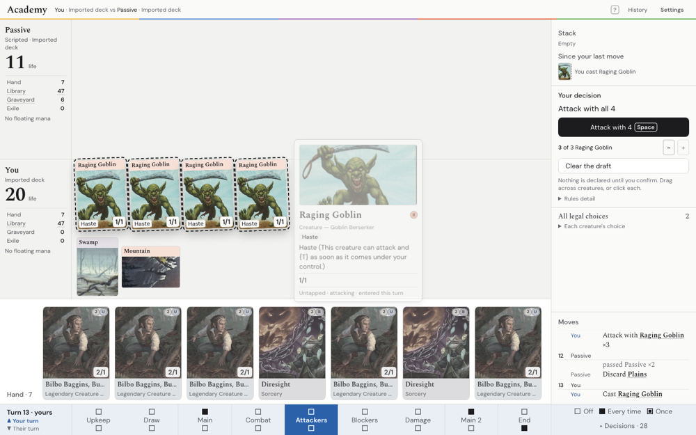
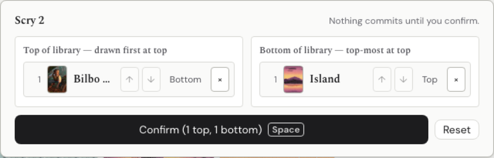

MTG-483 · Ship Review · PR #623
Confirm grouped combat and library decisions in one step
Following your Option A pivot, managym now owns a first-class grouped-input compiler above flat sequential Actions (group, preview_group, apply_group), and Academy confirms combat declarations, Scry, Surveil, and OrderLibrary in a single all-or-nothing group_command while recording byte-identical per-step decisions.
1. What ships
In live Academy play, you draft multi-card library choices (Scry, Surveil, OrderLibrary) in a new arrangement panel and draft combat declarations on the board as before — then press Confirm (Space) once. One WebSocket group_command goes to the server; either the whole plan lands or none of it does. There is no browser send loop, no Stop sending button, and no half-sent combat state on disconnect. Every underlying step still records as an ordinary sequential decision, so Replay, Study forks, and policy probabilities are unchanged.

group_command instead of 4 sequential commands (real QA session against Passive).

Keep all 2 on top / Put 1 in graveyard, keep 1 on top).

canonical_replay.decisions holds one row per native step (authority.group.<id>.0, .1) with raw offers and the chosen one checked — no arrange panel, zero experience-v1 schema change.Real Python API (no Academy required)
import managym
from managym.group import ScryPlan, apply_group, group, preview_group
active = group(env, viewer=0)
# -> ScryGroup(revision=14, fingerprint="...", kind="scry",
# items=[GroupCard(item=86, label="Bilbo Baggins, Burglar"),
# GroupCard(item=91, label="Island")],
# committed_top=[], committed_bottom=[])
plan = ScryPlan(top=[86], bottom=[91])
verdict = preview_group(
env, viewer=0, revision=active.revision, fingerprint=active.fingerprint, plan=plan
)
# -> GroupPreview(complete=True, refused=None, steps=[GroupStep(...), GroupStep(...)],
# outcome=ScryOutcome(kind="scry", top=[86], bottom=[91]))
apply_group(
env, viewer=0, revision=active.revision, fingerprint=active.fingerprint, plan=plan
)
# Exact same env.state_digest() as stepping verdict.steps manually through env.step()Real wire output (live Academy WebSocket + SQLite recording)
// Browser -> Server (1 message for a 2-card Scry or 4-creature attack):
{
"type": "group_command",
"grant_revision": 1,
"command": {
"command_id": "cmd-019...",
"match_id": "match_...",
"expected_revision": 14,
"prompt_id": "prompt_14",
"frame_hash": "8f2a...",
"plan": { "kind": "scry", "top": [86], "bottom": [91] }
}
}
// Recorded rows in play.sqlite canonical_replay.decisions (verified in QA):
// command_id = "authority.group.cmd-019....0" -> "Keep Bilbo Baggins, Burglar on top"
// command_id = "authority.group.cmd-019....1" -> "Put Island on the bottom"
//
// Live WS sibling field (pilot-only; null for watchers and never inside ExperienceFrame):
// payload["group"] = { "kind": "scry", "revision": 14, "items": [...], ... }2. How to try it
Start Academy locally with the Scry / Surveil / attack QA deck against Passive (or launch any deck with ./scripts/play):
cat <<'EOF' > /tmp/mtg483-group.txt
7 Mountain
7 Island
7 Swamp
16 Raging Goblin
12 Bilbo Baggins, Burglar
11 Diresight
EOF
cat <<'EOF' > /tmp/mtg483-plains.txt
60 Plains
EOF
uv run --no-project managym academy play \
--deck /tmp/mtg483-group.txt \
--opponent-deck /tmp/mtg483-plains.txt \
--opponent passive --seed 7
Attack with multiple Raging Goblins, cast Bilbo Baggins, Burglar (triggers Scry 2 on attack/etb via Take a Glance / Scry spells — or cast Diresight for Surveil 2 → OrderLibrary), open DevTools → Network → WS to see one group_command per Confirm, then open the finished game in Replay to verify per-step raw decisions.
Run the native + authority + browser acceptance suite:
CARGO_BUILD_JOBS=2 cargo nextest run --manifest-path managym/Cargo.toml --profile ci --test-threads 2 -E 'test(group) | test(combat_preview)' \
&& uv run python scripts/public_api.py check \
&& uv run --extra dev --extra play python -m pytest tests/academy/test_group_command.py tests/academy/test_shared_table_protocol.py tests/env/test_group.py -q \
&& (cd academy/ui && npm run check && npm test \
&& npx playwright test e2e/grouped-decisions.spec.ts e2e/combat-presentation.spec.ts e2e/drag-play.spec.ts e2e/keyboard-play.spec.ts)3. What is likeliest to surprise you
- Unstacked from MTG-431 onto
main: Curator of Destinies'PartitionPilesonly lives on PR #605 (which conflicts withmain), so this branch unstacked to ship combat + Scry/Surveil/OrderLibrary directly onmain. PortingPartitionPilesbecomes a clean follow-up once MTG-431 merges. protocol/experience-v1.schema.jsonis untouched: PuttinggroupinsideExperienceFramewould shift every combatframe_hashand break retained replays. Instead, livegrouptravels as a sibling field on live WS messages (attached per-recipient in_response_with_participant: pilot-only,nullfor watchers, delivered immediately onTransferPilot).testing-house-v1.schema.jsonaddsgroup_command.- Built on
combat_preview, notcompound_*/step_structured: Study branches and benchmarks execute throughcompound_*; widening it would change policy/Study semantics./api/sessions/{id}/combat-previewis removed, while PythonEnv.combat_preview_jsonandmanagym/combat.pystay as0.3.0-deprecated wrappers overpreview_groupto keepmainpatch-clean. - Surveil starts in Keep on top, while Scry & OrderLibrary start unplaced: Matches the engine's
Action::Decline("Keep on top") and Combat's default "No attack" without silently picking a card order for Scry/OrderLibrary. Confirm's label always states the exact Surveil commitment. - Domain activation thresholds (not step count): Combat groups activate at
≥ 1creature (preserving MTG-441 drag/draft consistency); Scry/Surveil/OrderLibrary activate at≥ 2remaining cards (so 2-cardOrderLibraryafter Surveil 2 still opensArrangePaneleven whenskip_trivialcollapses it to 1 native step). ScryPlan.bottomuses top-to-bottom reading order: MatchesOrderLibrary::Bottomand human reading order; the Rust compiler reversesScryCard(to_bottom=true)emissions to compensate fordecision.rs:2806.- All-or-nothing Confirm deleted the browser send loop:
stepOffer,Stop sending, and partial-progress banners are gone. Mid-Confirm reloads reconcile viaPendingSubmissionandrecovery.accepted_commands; individual steps remain clickable under the rail's collapsed raw disclosure (Each creature's choice/Each card's choice).
4. Findings & proposals (everything left outside or failing in PR #623)
| Finding | Concrete detail | Proposal |
|---|---|---|
1. CI failure: test_group_command.py:226CI red |
POST /api/sessions/{id}/combat-preview returned 405 Method Not Allowed instead of 404 in CI (Academy Integration / play: 447 passed, 1 failed) because the built static SPA catch-all matches GET on unknown paths. |
Fix here (in gate or a quick build pass): return 404 for unknown /api/* routes or accept (404, 405) in the test. |
2. CI failure: e2e/laptop-comfort.spec.ts:162CI red |
Seeded 1280×800 game hit a library group (Put Mountain next on the bottom) and timed out clicking action-option inside the collapsed disclosure because showEachCreaturesChoice (e2e/fixtures/combat.ts:319) early-returns for non-combat action spaces (86 passed, 1 failed). |
Fix here (in gate or a quick build pass): open per-creature-choices whenever attached, regardless of action-space kind. |
3. OrderLibrary::Bottom committed card label fallbackEdge case |
GroupSpec::OrderLibrary.committed carries IDs only (Vec<ObjectRenderId>). Because decision.rs:874 omits already-placed bottom cards from revealed_objects(), a mid-group raw click on a 3+ card bottom-order renders Card #42 in ArrangePanel instead of the card's name. |
Drop (rare 3+ bottom-order raw-click edge case; no current deck triggers it) — or Fix here by changing library committed* to Vec<GroupCard>. |
4. Env::apply_group on mixed-policy [Agent, Heuristic] envsEdge case |
Matches Env::step_structured (does not call settle_players). On [Agent, Agent] envs (Academy & test_group.py) this is identical to Env::step; on mixed [Agent, Heuristic] envs the built-in seat isn't auto-advanced after the group finishes. |
Drop (consistent with step_structured) — or Fix here by calling settle_players when external_seat().is_some(). |
| 5. QA cosmetic & pre-existing notes Observed |
(a) ArrangePanel is vertically centered so it shifts upward as cards are placed and it shrinks; (b) fresh-creature pile counter (3 of 3 Raging Goblin beside Attack with 4, same on main); (c) decision_context.rs:513 discard text says "or decline when offered" though no decline exists. |
Drop (cosmetic/pre-existing; fold the discard wording into the Pick follow-up Task if filed). |
6. Port PartitionPiles & check ChoosePileFollow-up |
Once MTG-431 (PR #605) merges: add PartitionPiles to flow/group/, delete MTG-431's partition.ts browser send loop and FACE_UP_RE label regex, and add the missing ChoosePile opponent-view UI test. |
Own Task (blocked on MTG-431 landing; clear standalone scope). |
| 7. Next grouped families: Pick, Amounts, OrderTriggers Follow-up |
From the reclassified audit in docs/academy.md: Pick (SelectCards max>1, SearchDistinctNames, Discard 2+, OpponentSplitsRevealed, KeepPermanents), Amounts (DistributeCounters, DivideAmongTargets, AssignCombatDamage), and pure-prefix OrderTriggers. Each adds one flow/group/ file + one panel, zero protocol changes. |
Own Task (one grouped Task for the next families rather than one per decision). |
8. 0.3.0 removal of combat_preview wrappersTagged |
managym/src/flow/combat_preview.rs, managym/combat.py, and Env.combat_preview_json already carry 0.3.0 deprecation tags for the minor rollover. |
Drop (already tracked by 0.3.0 rollover tags). |
5. Questions (reply e.g. 1a 2a 3a 4a 5a 6a)
-
Path forward for PR #623 & the two CI failures:
- 1a (recommended): Advance to
deliver— letgatefix the 2 CI test bugs (405on removed/combat-previewandshowEachCreaturesChoicefor library groups) and land PR #623. - 1b: Go back to
buildfirst to fix the 2 CI bugs plus any polish you pick in Questions 2–5 below.
- 1a (recommended): Advance to
-
Surveilinitial bucket inArrangePanel:- 2a (built): Remaining cards start in Keep on top, and Confirm explicitly names the commitment (
Keep all 2 on top). - 2b: Remaining cards start Unplaced (like Scry), disabling Confirm until every card is placed.
- 2a (built): Remaining cards start in Keep on top, and Confirm explicitly names the commitment (
-
2-card
OrderLibraryactivation (e.g. keeping 2 cards after Surveil 2):- 3a (built): Open
ArrangePanelwheneverremaining.len() ≥ 2, even thoughskip_trivialcompiles 2 cards to 1 native step. - 3b: Fall back to raw 1-click offers whenever
skip_trivialreduces the decision to 1 native step.
- 3a (built): Open
-
OrderLibrary::Bottomcommitted card labels (Finding 3):- 4a (built / drop): Keep
committed: Vec<ObjectRenderId>(Card #Nfallback only on a mid-group raw click in 3+ card bottom-order). - 4b (fix here): Change library
committed*fields toVec<GroupCard>so every committed card carries its name.
- 4a (built / drop): Keep
-
Env::apply_groupon mixed-policy[Agent, Heuristic]envs (Finding 4):- 5a (built / drop): Keep parity with
Env::step_structured(apply the group's steps only; do not callsettle_players). - 5b (fix here): Call
settle_playerswhenexternal_seat().is_some()so mixed-policyapply_groupmatches manualEnv::step.
- 5a (built / drop): Keep parity with
-
Follow-up Tasks to file (Findings 6 & 7):
- 6a (recommended): File both — (i) Port
PartitionPiles+ChoosePileUI test after MTG-431, and (ii) Add Pick + Amounts (+ pureOrderTriggers) grouped-input families. - 6b: File only
PartitionPiles(after MTG-431) for now. - 6c: File none now; keep the reclassified audit in
docs/academy.md.
- 6a (recommended): File both — (i) Port